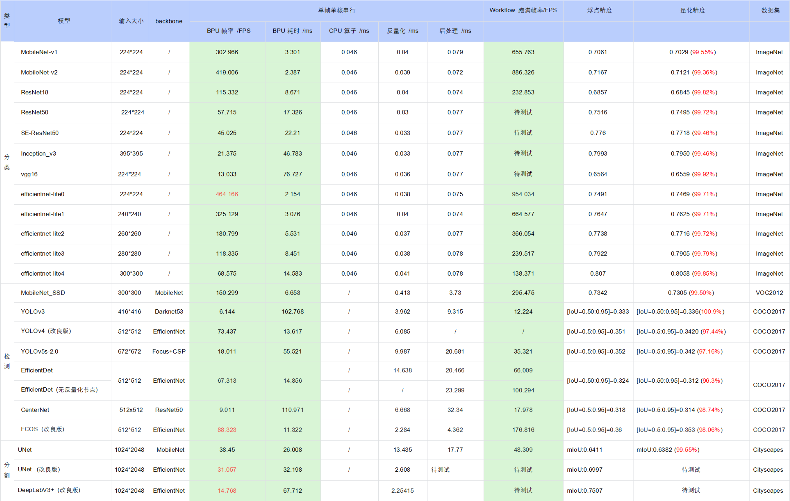

6.3. 快速体验
本章节中，我们为您介绍量化工具链PTQ方案的基本使用流程，便于您实现快速上手。 这里我们以 MobileNet-v1 模型为例，为您进行使用演示，量化工具链PTQ方案的更多详细内容，请阅读 PTQ原理及步骤详解 章节。
6.3.1. 开发环境准备
开发环境准备包括开发机host端（用于模型转换）和开发板board端（用于模型部署），若未准备开发环境，请阅读 环境安装 章节进行环境安装。
6.3.2. 模型准备
若开发环境已准备完成，请根据 使用Docker环境 章节介绍的方法，进入开发机模型转换环境中。
执行以下命令，检查MobileNet-v1浮点模型是否存在：
ls -l model_zoo/mapper/classification/mobilenet
命令执行完毕后，若出现以下日志，说明模型已准备完成：
[root@e99c47d29bdf open_explorer]# ls -l model_zoo/mapper/classification/mobilenet
total 30564
-rw-r--r-- 1 10488 10501 17027058 Aug 8 22:01 mobilenet.caffemodel
-rw-r--r-- 1 10488 10501 28105 Aug 8 22:01 mobilenet_deploy.prototxt
-rw-r--r-- 1 10488 10501 14186496 Aug 8 22:01 mobilenet_v2.caffemodel
-rw-r--r-- 1 10488 10501 51551 Aug 8 22:01 mobilenet_v2_deploy.prototxt
若执行命令后，未出现以上日志，请阅读 交付物说明 章节，进行模型示例包model_zoo的获取。
6.3.3. 模型验证
若示例浮点模型已准备完成，使用 hb_mapper checker 工具进行模型验证，确保其符合地平线X3芯片的支持约束。
进入浮点模型转换示例MobileNet-v1模型目录
cd ai_toolchain/horizon_model_convert_sample/03_classification/01_mobilenet/mapper
模型检查
#确认模型结构及算子是否支持，并提供每个算子执行硬件的分配情况（BPU/CPU）
bash 01_check.sh
命令执行完毕后，若出现以下日志，说明模型校验成功
2022-12-07 17:48:06,428 INFO [Wed Dec 7 17:48:06 2022] End to Horizon NN Model Convert.
2022-12-07 17:48:06,451 INFO ONNX model output num : 3
2022-12-07 17:48:06,473 INFO End model checking....
6.3.4. 模型转换
模型检查通过后，请使用 hb_mapper makertbin 工具进行模型转换。
进行校准数据预处理
bash 02_preprocess.sh
命令执行完毕后，若出现以下日志并无任何报错，说明数据预处理成功
write:./calibration_data_bgr_f32/ILSVRC2012_val_00000098.bgr
write:./calibration_data_bgr_f32/ILSVRC2012_val_00000099.bgr
write:./calibration_data_bgr_f32/ILSVRC2012_val_00000100.bgr
模型转换
#转换时所需的配置文件mobilenet_config.yaml，已存放在03_build.sh脚本同级文件夹下
bash 03_build.sh
命令执行完毕后，若出现以下日志并无任何报错，说明模型转换成功
2022-12-07 18:10:11,720 INFO Convert to runtime bin file sucessfully!
2022-12-07 18:10:11,720 INFO End Model Convert
模型转换完成后，会在 model_output 文件夹下保存模型文件和静态性能评估文件。
MOBILENET_subgraph_0.html # 静态性能评估文件（可读性更好）
MOBILENET_subgraph_0.json # 静态性能评估文件
mobilenetv1_224x224_nv12.bin # 用于在地平线AI芯片上加载运行的模型
mobilenetv1_224x224_nv12_optimized_float_model.onnx # 中间过程模型文件，可用于后续模型的精度校验
mobilenetv1_224x224_nv12_original_float_model.onnx # 中间过程模型文件，可用于后续模型的精度校验
mobilenetv1_224x224_nv12_quantized_model.onnx # 中间过程模型文件，可用于后续模型的精度校验
6.3.5. 模型性能验证
若以上模型量化步骤全部正确完成，说明示例 MobileNet-v1 模型已完成量化并已生成可在地平线X3芯片上运行的定点 mobilenetv1_224x224_nv12.bin 模型文件；若需了解 mobilenetv1_224x224_nv12.bin 定点模型的推理性能情况，请继续阅读后续内容；地平线支持在开发机端预估模型的静态性能，也支持在 开发板端使用工具快速评测动态性能。 性能验证的具体说明和性能调优建议请阅读 模型性能分析与调优 章节内容。
6.3.5.1. 静态性能评估
1.查看 hb_mapper_makertbin.log 日志文件，了解模型逐层算子的执行硬件和因CPU算子导致的分段情况。
2.查看 MOBILENET_subgraph_0.html 文件获取模型 BPU 部分的预估性能和模型整体带宽占用情况。
6.3.5.2. 动态性能评估
1.请确保已按照 开发板部署 章节介绍的方法完成环境部署，然后将 mobilenetv1_224x224_nv12.bin 模型拷贝至开发板的 /userdata 文件夹下（开发机和开发板需要网络连通）
scp model_output/mobilenetv1_224x224_nv12.bin root@{board_ip}:/userdata
2.登录开发板，使用 hrt_model_exec perf 工具快速评估模型的耗时和帧率
开发板登录方法，请阅读 开发板登录方法 章节内容，本示例采用网口
SSH登录方式：
ssh root@{board_ip}
cd /userdata
性能评测前，请执行以下命令，将开发板CPU工作状态设置为
performance模式
echo performance > /sys/devices/system/cpu/cpufreq/policy0/scaling_governor
BPU单核单线程串行状态下评测latency
hrt_model_exec perf --model_file mobilenetv1_224x224_nv12.bin --core_id 1 --thread_num 1 --frame_count 1000
执行命令后，会输出以下信息：
hrt_model_exec perf --model_file mobilenetv1_224x224_nv12.bin --core_id 1 --thread_num 1 --frame_count 1000
I0000 00:00:00.000000 2067 vlog_is_on.cc:197] RAW: Set VLOG level for "*" to 3
[BPU_PLAT]BPU Platform Version(1.3.1)!
[ 7223.150130] alloc_contig_range: [7f080, 7f090) PFNs busy
[HBRT] set log level as 0. version = 3.14.5
[DNN] Runtime version = 1.9.7_(3.14.5 HBRT)
Load model to DDR cost 128.814ms.
I0101 10:00:23.268204 2067 main.cpp:1045] get model handle success
I0101 10:00:23.268338 2067 main.cpp:1666] get model input count success
I0101 10:00:23.268458 2067 main.cpp:1673] prepare input tensor success!
I0101 10:00:23.268502 2067 main.cpp:1679] get model output count success
Frame count: 200, Thread Average: 3.795660 ms, thread max latency: 4.251000 ms, thread min latency: 3.417000 ms, FPS: 259.782776
Frame count: 400, Thread Average: 3.779484 ms, thread max latency: 4.251000 ms, thread min latency: 3.404000 ms, FPS: 260.795807
Frame count: 600, Thread Average: 3.760747 ms, thread max latency: 4.251000 ms, thread min latency: 3.400000 ms, FPS: 262.162018
Frame count: 800, Thread Average: 3.773966 ms, thread max latency: 4.251000 ms, thread min latency: 3.400000 ms, FPS: 261.178772
Frame count: 1000, Thread Average: 3.768055 ms, thread max latency: 4.251000 ms, thread min latency: 3.389000 ms, FPS: 261.604248
Running condition:
Thread number is: 1
Frame count is: 1000
Program run time: 3822.924000 ms
Perf result:
Frame totally latency is: 3768.055420 ms
Average latency is: 3.768055 ms
Frame rate is: 261.579880 FPS
BPU双核多线程并发状态下评测latency
hrt_model_exec perf --model_file mobilenetv1_224x224_nv12.bin --core_id 0 --thread_num 4 --frame_count 1000
执行命令后，会输出以下信息：
hrt_model_exec perf --model_file mobilenetv1_224x224_nv12.bin --core_id 0 --thread_num 4 --frame_count 1000
I0000 00:00:00.000000 2089 vlog_is_on.cc:197] RAW: Set VLOG level for "*" to 3
[BPU_PLAT]BPU Platform Version(1.3.1)!
[ 7346.693719] alloc_contig_range: [7f070, 7f080) PFNs busy
[ 7346.694519] alloc_contig_range: [7f080, 7f090) PFNs busy
[ 7346.699149] alloc_contig_range: [7f070, 7f080) PFNs busy
[ 7346.700179] alloc_contig_range: [7f080, 7f090) PFNs busy
[HBRT] set log level as 0. version = 3.14.5
[DNN] Runtime version = 1.9.7_(3.14.5 HBRT)
Load model to DDR cost 102.603ms.
I0101 10:02:26.788780 2089 main.cpp:1045] get model handle success
I0101 10:02:26.788911 2089 main.cpp:1666] get model input count success
I0101 10:02:26.789034 2089 main.cpp:1673] prepare input tensor success!
I0101 10:02:26.789078 2089 main.cpp:1679] get model output count success
Frame count: 200, Thread Average: 6.002510 ms, thread max latency: 7.330000 ms, thread min latency: 4.497000 ms, FPS: 656.142151
Frame count: 400, Thread Average: 6.002273 ms, thread max latency: 7.330000 ms, thread min latency: 4.497000 ms, FPS: 658.308350
Frame count: 600, Thread Average: 6.002684 ms, thread max latency: 7.330000 ms, thread min latency: 4.497000 ms, FPS: 658.937317
Frame count: 800, Thread Average: 6.003119 ms, thread max latency: 7.330000 ms, thread min latency: 4.497000 ms, FPS: 659.245239
Frame count: 1000, Thread Average: 6.001638 ms, thread max latency: 7.330000 ms, thread min latency: 4.497000 ms, FPS: 659.359619
Running condition:
Thread number is: 4
Frame count is: 1000
Program run time: 1517.078000 ms
Perf result:
Frame totally latency is: 6001.638184 ms
Average latency is: 6.001638 ms
Frame rate is: 659.161889 FPS
6.3.6. 模型精度验证
若以上模型量化步骤全部正确完成，说明已正确获取到 mobilenetv1_224x224_nv12.bin 模型的性能情况；若需了解 mobilenetv1_224x224_nv12.bin 定点模型的推理精度情况，请继续阅读后续内容；地平线支持在开发机端评测模型的推理精度，也支持在 开发板端评测模型的推理精度。 精度验证的具体说明和优化建议，请阅读 模型精度分析与调优 章节内容。
6.3.6.1. 开发机Python环境验证
在开发机的Python环境中评测 mobilenetv1_224x224_nv12_quantized_model.onnx 模型的量化精度，其输出与 mobilenetv1_224x224_nv12.bin 模型是保持推理结果一致的，参考示例如下：
测试量化模型单张图片推理结果
bash 04_inference.sh
命令执行完毕后，若出现以下日志并无任何报错，说明模型推理完成
2022-12-13 11:26:57,311 INFO The input picture is classified to be:
2022-12-13 11:26:57,312 INFO label 340, prob 0.98181, class ['zebra']
2022-12-13 11:26:57,312 INFO label 292, prob 0.01510, class ['tiger, Panthera tigris']
2022-12-13 11:26:57,312 INFO label 282, prob 0.00219, class ['tiger cat']
2022-12-13 11:26:57,312 INFO label 83, prob 0.00050, class ['prairie chicken, prairie grouse, prairie fowl']
2022-12-13 11:26:57,312 INFO label 290, prob 0.00003, class ['jaguar, panther, Panthera onca, Felis onca']
测试浮点模型单张图片推理结果（可选）
bash 04_inference.sh origin
命令执行完毕后，若出现以下日志并无任何报错，说明模型推理完成
2022-12-13 11:28:37,068 INFO The input picture is classified to be:
2022-12-13 11:28:37,069 INFO label 340, prob 0.98672, class ['zebra']
2022-12-13 11:28:37,069 INFO label 292, prob 0.01095, class ['tiger, Panthera tigris']
2022-12-13 11:28:37,069 INFO label 282, prob 0.00128, class ['tiger cat']
2022-12-13 11:28:37,069 INFO label 83, prob 0.00060, class ['prairie chicken, prairie grouse, prairie fowl']
2022-12-13 11:28:37,069 INFO label 352, prob 0.00003, class ['impala, Aepyceros melampus']
测试量化模型精度，请确保您的评测数据集已准备完成
bash 05_evaluate.sh
命令执行完毕后，若出现以下日志并无任何报错，说明模型精度测评完成
2022-12-13 12:25:11,091 INFO Batch:49990/50000; accuracy(all):0.7031
2022-12-13 12:25:11,091 INFO Batch:50000/50000; accuracy(all):0.7032
===REPORT-START{MAPPER-EVAL}===
0.7032
===REPORT-END{MAPPER-EVAL}===
测试浮点模型精度（可选）
bash 05_evaluate.sh origin
命令执行完毕后，若出现以下日志并无任何报错，说明模型精度测评完成
2022-12-13 14:07:03,226 INFO Batch:49990/50000; accuracy(all):0.7061
2022-12-13 14:07:03,226 INFO Batch:50000/50000; accuracy(all):0.7062
===REPORT-START{MAPPER-EVAL}===
0.7062
===REPORT-END{MAPPER-EVAL}===
6.3.6.2. 开发板C++环境验证
在开发板端测评模型精度，为方便您在板端快速完成模型部署，我们为您提供了一套适配地平线X3芯片的嵌入式端预测库，并提供了相关示例。 预测库libdnn API详细内容，请阅读 模型推理接口使用说明 章节。 单张图片推理及常用API示例详细内容，请阅读 模型上板运行示例说明 章节。
注意事项：进行开发板测评模型精度前，请确保已按照 环境安装 章节完成开发板端的环境部署。
示例 MobileNet-v1 模型推理单张图片的板端示例运行方式如下：
开发机环境执行交叉编译，生成可执行程序
cd ai_toolchain/horizon_runtime_sample/code
bash build_xj3.sh
命令执行完毕后，若出现以下日志并无任何报错，说明编译完成
-- Installing: /horizon_xj3_ddk/ai_toolchain_customer/Ai_Toolchain_Package-release-v1.16.4-OE-v2.2.3a/ai_toolchain/horizon_runtime_sample/code/../xj3/script/aarch64/bin/run_resnet_feature
-- Set runtime path of "/horizon_xj3_ddk/ai_toolchain_customer/Ai_Toolchain_Package-release-v1.16.4-OE-v2.2.3a/ai_toolchain/horizon_runtime_sample/code/../xj3/script/aarch64/bin/run_resnet_feature" to ""
+ cd ..
+ rm -rf arm_build
拷贝xj3文件夹至板端
cd ../xj3/model
mkdir runtime
scp -r ../../xj3 root@{board_ip}:/userdata
拷贝模型文件至板端
scp -r ../../../model_zoo/runtime/mobilenetv1 root@{board_ip}:/userdata/xj3/model/runtime
登录开发板环境
开发板登录方法，请阅读 开发板登录方法 章节内容，本示例采用网口
SSH登录方式；ssh root@{board_ip}
进入
xj3/script/目录下，执行相应运行脚本即可
cd /userdata/xj3/script/00_quick_start/
sh run_mobilenetV1.sh
执行命令后，会输出以下信息：
./aarch64/bin/run_mobileNetV1_224x224 --model_file=../../model/runtime/mobilenetv1/mobilenetv1_224x224_nv12.bin --image_file=../../data/cls_images/zebra_cls.jpg --top_k=5
I0000 00:00:00.000000 1921 vlog_is_on.cc:197] RAW: Set VLOG level for "*" to 3
[BPU_PLAT]BPU Platform Version(1.3.1)!
[ 119.291222] alloc_contig_range: [7f070, 7f080) PFNs busy
[ 119.292053] alloc_contig_range: [7f080, 7f090) PFNs busy
[ 119.296577] alloc_contig_range: [7f070, 7f080) PFNs busy
[ 119.297422] alloc_contig_range: [7f080, 7f090) PFNs busy
[HBRT] set log level as 0. version = 3.14.5
[DNN] Runtime version = 1.9.7_(3.14.5 HBRT)
I0101 08:01:59.387200 1921 run_mobileNetV1_224x224.cc:135] DNN runtime version: 1.9.7_(3.14.5 HBRT)
I0101 08:01:59.387544 1921 run_mobileNetV1_224x224.cc:252] input[0] name is data
I0101 08:01:59.387662 1921 run_mobileNetV1_224x224.cc:268] output[0] name is prob
I0101 08:01:59.409677 1921 run_mobileNetV1_224x224.cc:159] read image to tensor as nv12 success
I0101 08:01:59.413903 1921 run_mobileNetV1_224x224.cc:194] TOP 0 result id: 340
I0101 08:01:59.413958 1921 run_mobileNetV1_224x224.cc:194] TOP 1 result id: 292
I0101 08:01:59.413978 1921 run_mobileNetV1_224x224.cc:194] TOP 2 result id: 282
I0101 08:01:59.413995 1921 run_mobileNetV1_224x224.cc:194] TOP 3 result id: 83
I0101 08:01:59.414012 1921 run_mobileNetV1_224x224.cc:194] TOP 4 result id: 290
6.3.7. 公版模型性能精度指标
下表提供了部分典型开源模型和地平线改良模型在X3M芯片上的性能精度指标。

注意：
表格中的数据均为X3M芯片（BPU 1GHz）在开发板端实测的结果（测试模型均来自于horizon_model_convert_sample模型示例包），其中：
a. 耗时数据 为单帧单核串行指标（芯片有两个BPU核）
b. workflow帧率 为双核多线程打满，BPU/CPU 并发的指标
对于 BPU/CPU 混合异构模型，单帧串行下的耗时包括：
输入量化CPU节点 + 模型BPU算子 + 模型CPU算子 + 输出反量化CPU节点 + CPU后处理
====================================================================================
a. 输入量化CPU节点：float32->int8，只有 featuremap 输入模型包含，图像输入模型不包含。因为需要遍历数据，所以耗时与 shape 大小成正比
b. 模型CPU算子：
ⅰ. 分类模型尾部的 Softmax 和 Reshape 为 CPU 算子，耗时约 0.046ms ⅱ. 检测模型均没有 CPU 算子 ⅲ. 分割模型 DeepLabV3+ 尾部的 Argmax 为 CPU 算子
c. 输出反量化CPU节点：int8->float32，耗时同样与 shape 大小成正比
d. 地平线目前支持将 量化/反量化节点手动摘除，由用户自行融入前后处理代码中实现，以减少数据重复遍历的损耗，我们已在交付包中提供了 EfficientDet 参考示例，摘除了反量化节点合入后处理，整体性能提升明显（ 66FPS–>100FPS ）
e. 目前地平线示例模型的后处理均未做针对性的性能优化，您可以根据实际需求采用如近似高效实现等优化手段进行代码级加速
在实际应用中，BPU 和 CPU 可以并发运行，提高整体推理速度。